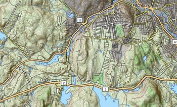
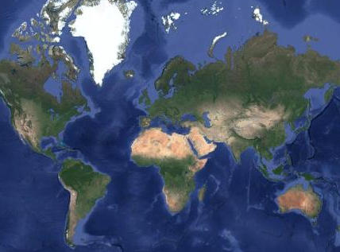
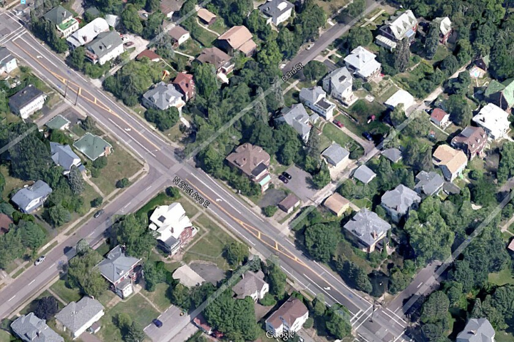

Résultats des élections générales du Québec 2018
Visualisation des résultats par circonscription
À propos
Fonds de carte

OpenStreetMap

Satellite

GoogleStreets
Couches
Circonscriptions
MSP Desserte 911
✕
Statistiques
Gagnant